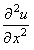
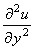

7. Схема переменных направлений.
|
Рассмотрим способ интерпретации неявной разностной схемы (7.3), позволяющий добиться повышения порядка аппроксимации по времени, - схему переменных направлений:
 и является неявной по координате x и явной по координате y. Вторая подсхема
аппроксимируется на втором полушаге интервала и является неявной по координате y и
явной по координате x. Каждая из подсхем (как и в случае схемы расщепления (7.7), (7.8))
является абсолютно устойчивой и решается с помощью метода прогонки.
и является неявной по координате x и явной по координате y. Вторая подсхема
аппроксимируется на втором полушаге интервала и является неявной по координате y и
явной по координате x. Каждая из подсхем (как и в случае схемы расщепления (7.7), (7.8))
является абсолютно устойчивой и решается с помощью метода прогонки.
Обратим внимание на две особенности, которые необходимо учитывать при записи схемы переменных направлений (7.13): 1) коэффициенты перед разностными операторами, аппроксимирующими производные  и , должны быть поделены пополам; 2) свободный член записывается во второй подсхеме и аппроксимируется на шаге (n + 1/2). Складывая обе подсхемы и принимая во внимание обозначения (7.6), получаем:
Алгоритм решения схемы переменных направлений (7.13) аналогичен алгоритму решения схемы расщепления (7.7), (7.8). Коэффициенты, соответствующие уравнению (4.10), имеют вид: для первой подсхемы
для второй подсхемы
|